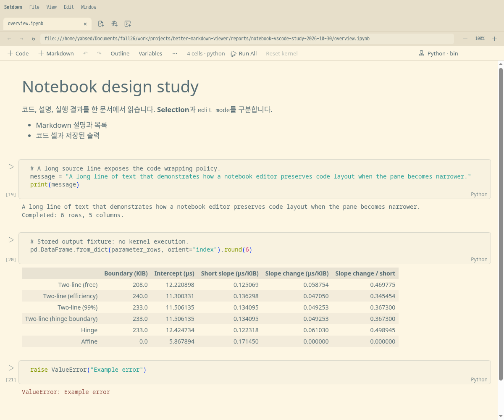
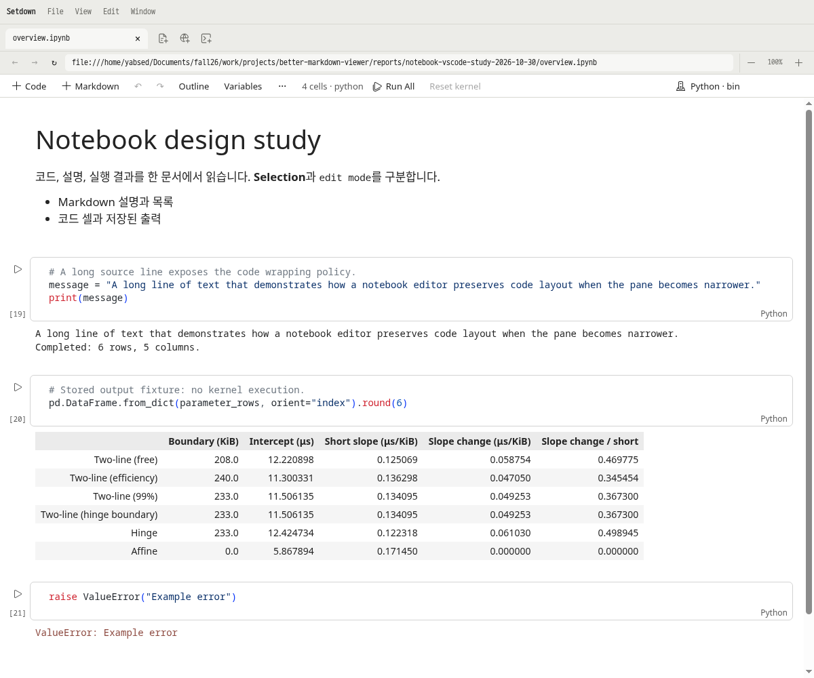
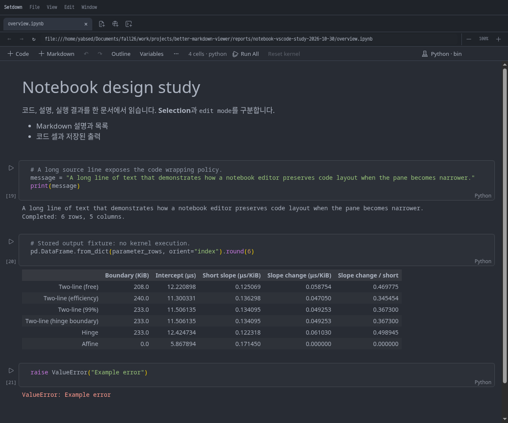

구현 및 검증 · 2026-10-30 · 범위: Jupyter Notebook
VS Code 기준의 노트북 편집·읽기 화면
코드 셀, Markdown, 출력, 실행 상태, 도구 모음, 삽입·메뉴·키보드 동작을 함께 변경했습니다. 선행 연구에서 검증한 VS Code 1.143.0의 기본값을 기준으로 삼았습니다.
기능 검증노트북 Electron 15개 통과
단위 테스트 93개 파일 / 654개 통과
전체 Electron: 212개 통과, 1개 실패 — 로그 참조
전체 실행 로그 전환 중 임시 화면 제거신규 열기 → 다른 노트북 → 편집 후 Esc → 기존 탭 복귀를 프레임 단위로 검사했습니다.
표시 프레임 15개 · 임시 원문/빈 코드 프레임 0개
프레임 기록 노트북 전반
- 8px 왼쪽 여백 + 36px 실행 영역, 16px 오른쪽 여백. 코드 위 12px·아래 4px와 22px 상태줄.
- 실행 번호는 왼쪽, 언어·실행 상태는 셀 아래. 셀 테두리를 Monaco 위에 그려 위·옆 경계가 가려지던 문제를 해결했습니다.
- Codicons 도구 모음과 셀·출력 팝오버, 셀 사이 삽입 버튼. 마우스 이동으로 셀 높이가 변하지 않습니다.
- 기본 코드·출력 줄바꿈, 줄 번호, 고정 제목은 꺼짐. 노트북 명령에서 각각 전환할 수 있습니다.
- Markdown은 코드 크기의 1.2배와 전체 셀 폭을 사용하고, HTML 출력은 기본 UI 글꼴·크기를 사용합니다.
- Shift+Enter는 기존 다음 셀의 선택 모드로 이동하고, 마지막에서는 같은 종류의 셀을 만듭니다. Alt+Enter는 코드 셀을 추가합니다.

Setdown 구현 · Solarized Light. 커널 실행 없이 저장된 출력으로 캡처했습니다.
밝은 테마와 어두운 테마

GitHub Light
One DarkPython 코드 영역
글꼴과 행간은 실제 VS Code 실행 화면의 계산된 스타일과 대조했습니다. 배경과 문법 색상은 선택한 Setdown 테마에 따릅니다. 8개 테마에서 실제 코드 주석 대비 4.5:1 이상을 확인했으며, GitHub 밝은·어두운 테마는 대비가 낮아지지 않도록 원래 편집기 배경을 사용합니다. 기본 Monaco Python 편집기와 기존 LSP를 유지하며, Pylance나 VS Code의 모든 확장 기능을 복제한 것은 아닙니다.
| 항목 | VS Code | Setdown |
|---|
| CSS 글꼴 | "Droid Sans Mono", monospace | "Droid Sans Mono", monospace |
|---|
| 글자 크기 | 14px | 14px |
|---|
| 행간 | 19px | 19px |
|---|
| 편집기 기준 왼쪽 글자 여백 (px) | 35 | 28 |
|---|
측정 JSON · 실제 VS Code 캡처
8개 테마 실제 색 대비 측정
노트북 전환의 깜박임
제공된 01:06:02 녹화에서는 노트북을 바꿀 때 Markdown 원문이 먼저 표시된 뒤 제목·본문으로 바뀌었습니다. 초기 화면과 비활성 탭의 재진입은 뷰포트 관찰, 코드 편집기 배치, 최신 Markdown 렌더링이 완료된 뒤 공개합니다. 편집 후 Esc도 원문을 임시 미리보기로 내보내지 않습니다. 이미 수정된 일반 Markdown Esc 전환의 테스트도 계속 Xvfb에서 수행합니다.
90% 앱 배율에서 발견한 긴 셀 끝부분의 약 1픽셀 오차도 수정했습니다. 정수 단위인 Monaco 스크롤과 소수점이 있는 CSS 배치를 맞추며, 문서 높이와 외부 스크롤은 그대로 유지합니다. 90%·100%·130% 및 창 크기 변경의 기존 좌표 허용치를 완화하지 않았습니다.
출력의 정상 줄바꿈
긴 단어를 문자 단위로 쪼개던 prose 스타일을 HTML 출력에서 분리했습니다. pandas 출력의 표는 필요한 최소 너비를 확보하고 출력 안에서 가로로 스크롤합니다. 아래는 동일한 pandas 2.3.3 HTML의 실제 Chromium 측정입니다.
| 내용 폭 | 변경 전 표 높이 | VS Code | 구현 후 |
|---|
| 420px | 1580.47px | 322px | 322px |
|---|
| 560px | 740.47px | 322px | 322px |
|---|
| 780px | 404.47px | 227px | 227px |
|---|
출력 측정 원본 · HTML 우선 MIME 선택, 이미지 보기·저장, 출력 복사, 포맷 전환도 검증했습니다.
성능 비교
변경 전 기준은 3b0b7372d73be86fb61260b3594650c915681c9a이며, 별도 checkout과 독립된 의존성을 사용합니다. 양쪽 빌드에 SETDOWN_BUILD_SOURCEMAP=0을 동일하게 적용했습니다. 모든 비교는 같은 격리 디스플레이에서 실행합니다.
PASS — 0 regressions / 48 buckets. 각 버전 5회, 8개 조건, 실행당 5회 전환. 임계값은 +25%와 +50ms를 동시에 초과할 때 실패하는 기존 기준 그대로입니다.
단위 ms, 변경 전 → 변경 후 중앙값. 첫 번째·두 번째·warm(3–5회)은 분리했습니다. 아래 표는 준비 대기시간을 제외합니다.
| 화면 | 준비 대기 | 편집 | Esc 첫째 | Esc 둘째 | Esc warm | 더블클릭 첫째 | 더블클릭 둘째 | 더블클릭 warm |
|---|
| Markdown | 0 | 없음 | 44 → 48 | 24 → 27 | 26 → 21 | 18 → 18 | 34 → 34 | 12 → 12 |
|---|
| Markdown | 0 | 있음 | 425 → 409 | 103 → 100 | 90 → 88 | 18 → 16 | 13 → 13 | 13 → 14 |
|---|
| Markdown | 3000 | 없음 | 42 → 43 | 20 → 17 | 25 → 20 | 17 → 16 | 11 → 12 | 11 → 12 |
|---|
| Markdown | 3000 | 있음 | 109 → 112 | 102 → 106 | 92 → 92 | 15 → 16 | 13 → 16 | 13 → 13 |
|---|
| Git review | 0 | 없음 | 1304 → 917 | 25 → 22 | 18 → 28 | 44 → 23 | 12 → 12 | 18 → 12 |
|---|
| Git review | 0 | 있음 | 973 → 992 | 1436 → 1455 | 178 → 185 | 15 → 22 | 21 → 22 | 19 → 19 |
|---|
| Git review | 3000 | 없음 | 25 → 27 | 22 → 21 | 17 → 17 | 25 → 24 | 12 → 11 | 17 → 18 |
|---|
| Git review | 3000 | 있음 | 229 → 232 | 185 → 184 | 180 → 175 | 23 → 23 | 19 → 18 | 17 → 18 |
|---|
3000ms 준비 대기를 포함한 첫 Esc는 아래와 같습니다. 0ms 조건은 위 표와 같고, 둘째·warm·더블클릭에는 준비 대기를 더하지 않습니다. 준비 작업의 CPU 시간이 아니라 지정한 대기시간을 더한 값입니다.
| 화면 | 편집 | 첫 Esc + 준비 대기 |
|---|
| Markdown | 없음 | 3042 → 3043 |
|---|
| Markdown | 있음 | 3109 → 3112 |
|---|
| Git review | 없음 | 3025 → 3027 |
|---|
| Git review | 있음 | 3229 → 3232 |
|---|
원시 측정·실행 순서·빌드 해시: comparison.json. Esc 수치는 최신 내용의 비어 있지 않은 네이티브 캡처가 돌아오는 시점이며 모니터 표시 지연은 아닙니다.
유지한 보장과 검증 범위
저장된 JSON·메타데이터·첨부·출력의 원본 보존, 렌더링 HTML 정화, 한글 IME, Monaco 팝업의 Esc 우선권, 텍스트/셀 Undo, 검색 포커스, 드래그, 출력 높이 보존, Python 커널 실행을 확인했습니다. 저장된 HTML의 임의 CSS·스크립트를 허용하지 않았으며, 위젯·확장 렌더러·디버거까지 VS Code와 동일하다고 주장하지 않습니다.
초기 실패와 수정 후 기록은 initial/, revision-2/, revision-3/, revision-4/에 보존합니다. 재시도 설정이나 기존 허용치를 바꿔 통과시키지 않았습니다.
검증 이력: 첫 전체 실행은 213개가 통과했습니다. 대비 검사를 추가한 다음 전체 실행에서는 신규 측정 코드의 공백 처리 오류와 기존 Git 탭의 첫 프레임 검사 실패가 각각 발생했습니다. Monaco의 표시 공백을 정규화하여 측정 오류를 고쳤습니다. Git 검사는 변경 전 독립 빌드와 변경 후 별도 진단에서 모두 통과했으나 최초 실패 원인은 확정하지 못했습니다. 실패 기록을 보존하고 첫 프레임 상태를 JSON으로 남기도록 진단만 추가했습니다. Git 제품 동작과 기존 시간·내용 검증은 변경하지 않았습니다. 최종 전체 실행에서는 노트북 15개를 포함한 212개가 통과했고, 소스 관리의 긴 경로 검사에서 60초 시간 초과 1건이 발생했습니다. 너비 220px·400px 캡처는 완료됐으나 시간 초과한 정확한 호출은 로그에 남지 않았습니다. 해당 검사에 추적을 켠 별도 진단은 2.4초에 통과했으나 시간 초과 원인은 재현하지 못했습니다. 최초 실패는 그대로 보존하며 전체 검증을 통과로 취급하지 않습니다. 소스 관리 추적 진단 로그 첫 전체 실행 · 실패 실행 · 기준 버전 진단 · 변경 후 진단
갱신한 노트북 계약 · 실제 Electron 회귀 테스트 · 비교 캡처 스크립트